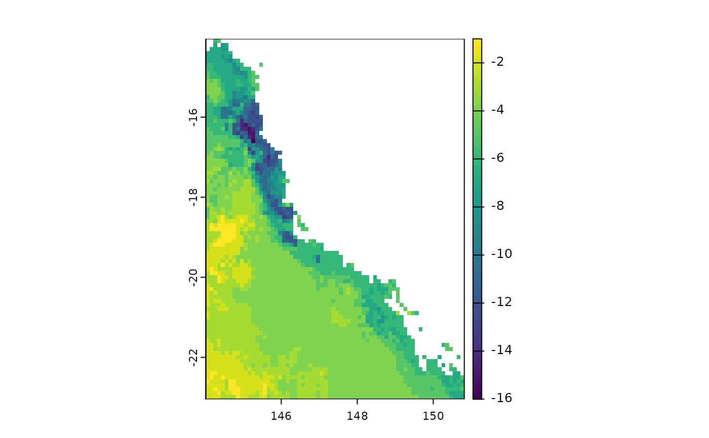

Calculates the difference of rasterized diversity metrics (richness, phylogenetic endemism, phylogenetic diversity, weighted endemism, evolutionary distinctiveness) between time periods.
Arguments
- r1
SpatRaster. Rasterized diversity metrics for time 1 (e.g phylogenetic diversity in present). To calculate some diversity metrics for rasters see phyloraster::geo.phylo function.
- r2
SpatRaster. Rasterized diversity metrics for time 2 (e.g phylogenetic diversity in future).
- filename
character. Output filename.
- cores
positive integer. If cores > 1, a 'parallel' package cluster with that many cores is created and used.
- ...
additional arguments to be passed passed down from a calling function.
Examples
# \donttest{
# data
x <- terra::rast(system.file("extdata", "rast.presab.tif",
package="phyloraster"))
tree <- ape::read.tree(system.file("extdata", "tree.nex",
package="phyloraster"))
# metric SR richness
riq.pres <- rast.sr(x)
# imagine we lost some species in the future
riq.fut <- rast.sr(x[[c(1:15)]])
dg <- delta.grid(riq.pres, riq.fut)
terra::plot(dg)

# }